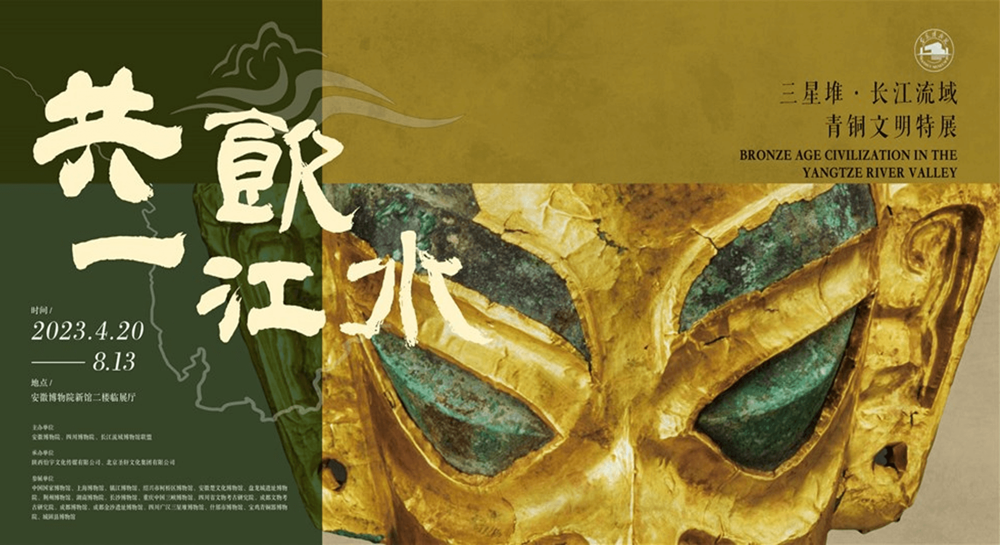
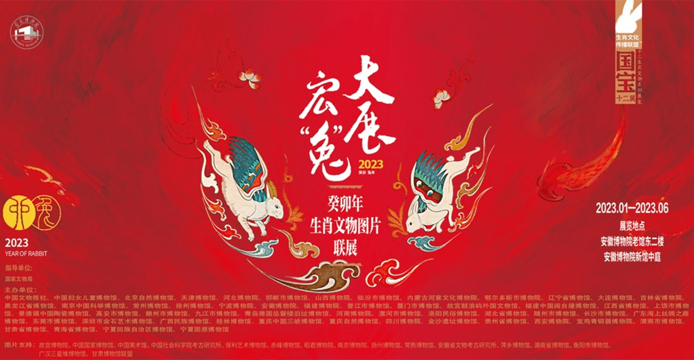
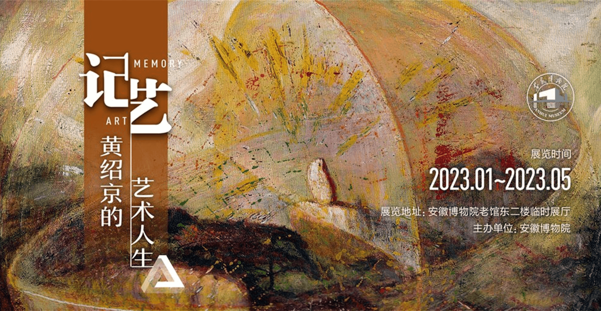
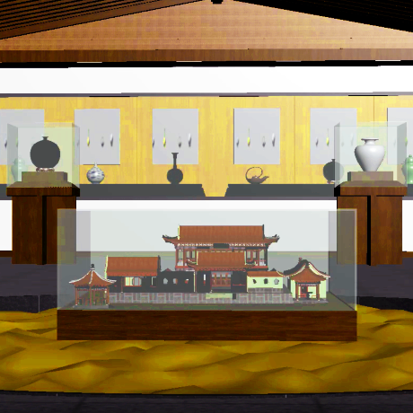
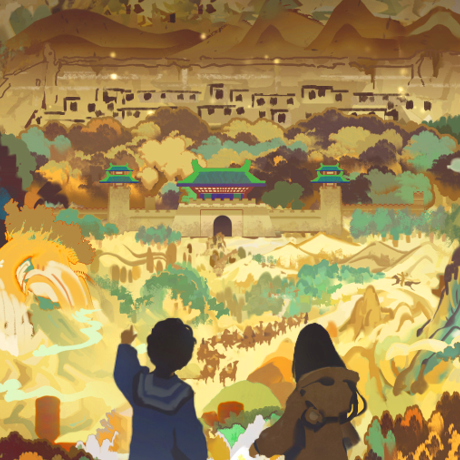

博物馆展览
导航栏
云端3D展示
视频介绍
文物介绍
云展览
CLOUD MUSEUM
灵感
安徽博物馆
支持
云端3D展示
视频介绍
文物介绍
资料来源
安徽博物馆
共饮一江水一三星堆
展出时间：
2023/4/20-2023/8/13
展出地点：安徽博物院新馆二楼临时展厅
滚滚长江，延绵万里，沟通两岸及各干支流，造就了从巴山蜀水到江南水乡的千年文脉，是中华民族的代表性符号和中华文明的标志性象征。安徽地跨江淮，长江由西南向东北斜贯全省5个市12个县。商周时期，安徽地区作为中原和南方诸国的过渡地带。
图片及链接素材来源：安徽博物馆


大展宏“兔”一癸卯年生肖文物图片联展
展出时间：
2023/1/16-
展出地点：老馆东二楼、新馆二楼中庭
公元2023年是中华传统生肖纪年中的癸卯兔年。兔是一种哺乳动物，它的繁衍踪迹遍布世界各地。在中国传统文化中，“兔”的美誉度很高，唐代诗人蒋防《白兔赋》赞其“皎如霜辉，温如玉粹。其容炳真，其性怀仁”。它荣膺十二生肖之列。
图片及链接素材来源：安徽博物馆
记艺一黄绍京的艺术人生
展出时间：
2023/1/15-
展出地点：安徽博物院老馆东二楼
黄绍京是上世纪五十年代中央美术学院首届油画系五年制毕业生，受教于吴作人、王式廓等老一辈艺术家门下。1959年，黄绍京从中央美术学院毕业后，在艰苦的岁月里远赴青海，投身美术教育工作长达二十七年。1985年，黄绍京迁居合肥，调至安微省集邮协会工作，直至2000年病故。
图片及链接素材来源：安徽博物馆


3d展示
3D display
视频
VIDEOS

照片
PHOTOS